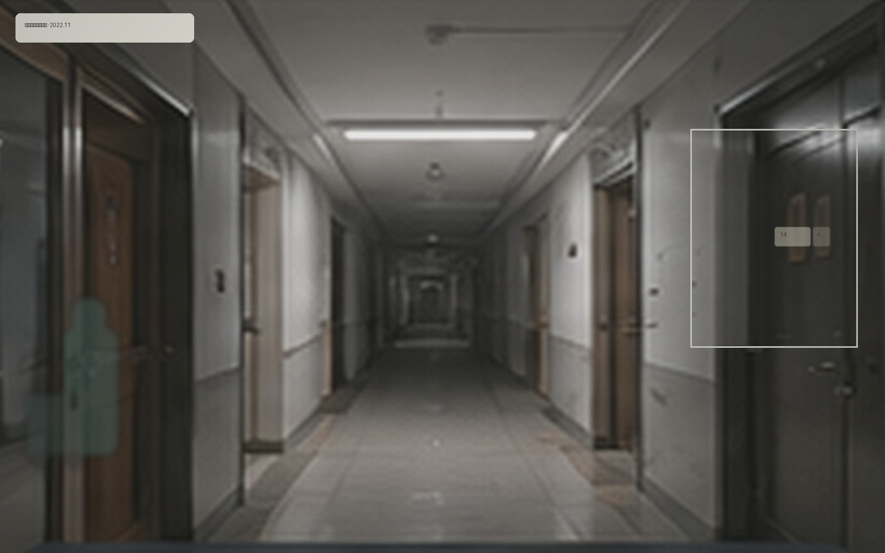

12 月上旬，保洁团队完成两栋高层走廊、公共镜面、楼梯间扶手和设备间外侧的深度清洁。由于冬季湿度较低，本轮增加了墙面浮尘与门框顶部清洁。

照片说明：保洁人员位于 A栋高层走廊，公共镜面中能看到走廊另一侧局部。
高层住户若发现门口地垫、快递或临时物品被移动，可先在失物招领中查询。消防通道不建议长期放置私人物品。
本次范围
| 区域 | 内容 |
|---|---|
| 走廊 | 地面、踢脚线、门框顶部、公共镜面 |
| 楼梯间 | 扶手、防火门、指示牌外表面 |
| 一层 | 休息区织物清洁与取件柜周边消毒 |
本页面内容最后更新于 2023-12-20